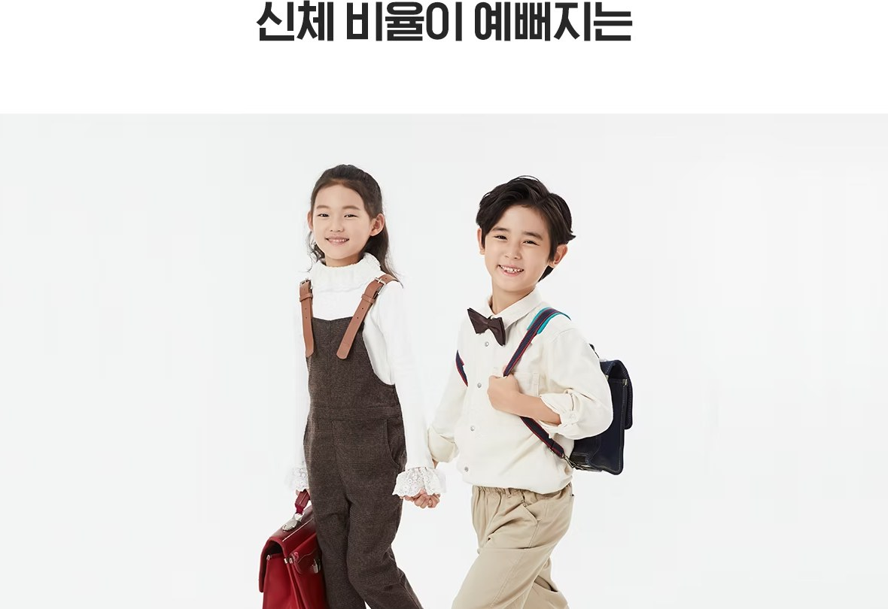
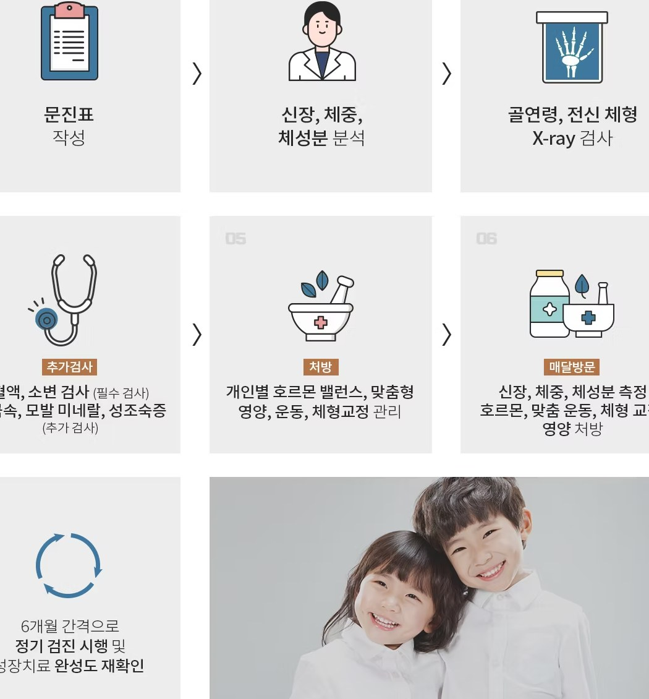
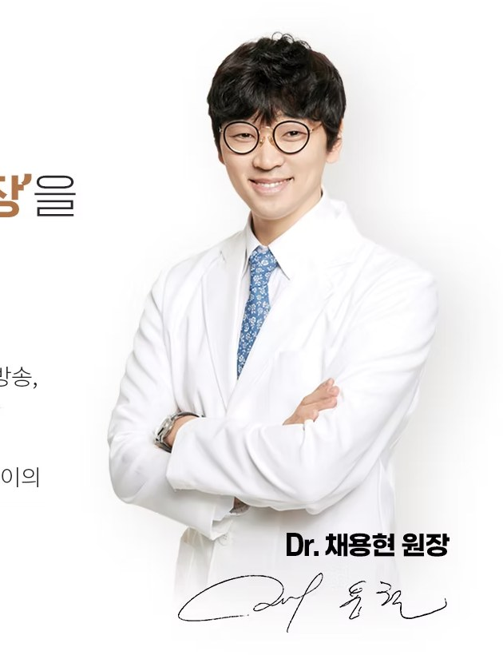

신체 비율이 예뻐지는

서구화된 시대, 큰 키와 긴 다리
우리아이도 가능할까?
요즘은 체형이 서구화되면서, 아이들도 큰 키를 선호하고 있습니다
다리가 길고 짧음에 대해서도 민감하게 반응합니다
훤칠한 키와 긴 다리는 시원시원하게 보이며, 첫인상에 막대한 영향을 미칩니다
키가 작거나 다리가 짧은 사람은 옷맵시가 나지 않거나 정서적으로 위축될 수도 있습니다

성조숙증인 아이들은
일반적으로 다리가 짧다?
논문에 의하면 사춘기의 성장은 하체보다는 상체의 길이 성장과
더 연관성이 높다고 이야기되고 있습니다
그 결과 성조숙증을 겪은 아이들의 경우 그렇지 않은 아이들에 비해
하체가 짧고 상체가 긴 모습을 보이게 됩니다
또한 이러한 모습은 성인까지 이어질 수 있다고 되어 있습니다
연세새봄 187 성장클리닉에서는 '신체 비율이 예뻐지는' 프로그램을 통해
2차 성징을 진행을 조절하고 하체의 성장판 자극 운동을 통해 모델과 연예인을 지망하는 아이들의
키 성장을 돕는 특화된 프로그램을 진행하고 있습니다
Short adult stature, with unfavourable body proportions, i.e. an increased upper:lower segment ratio, is probably the only handicap of idiopathic central precocious puberty that persists into adulthood.
출처: Diagnosis and treatment of central precocious puberty—can final height be improved?
German/Dutch Central Precocious Puberty Study Group, Workshop I: Puberty: Onset and
Diagnosis, Hormone Research in Paediatrics
Because puberty is associated with relatively greater truncal than limb growth, an increased U/L ratio for age may be seen in precocious puberty. A decreased ratio for age indicating long legs compared to the trunk may be seen in delayed or incomplete puberty
출처: Management of Children with Short Stature, EDUCATIONAL ARTICLE, Pediatric Oncall Journal

진료 과정
아이의 성장 관리는 아이, 부모님, 의사가 함께 하는 과정입니다
따라서 187 성장 클리닉의 모든 진료 과정을 부모님과 함께 진행하고 있습니다
초진 순간부터 성장 치료가 종료된 후 6개월~1년까지 지속적인
케어를 통해 아이의 건강한 성장을 관리합니다

연세새봄에서는
‘건강하고 균형있는 성장’을
약속 드립니다
연세새봄은 오랜 시간 성장치료를 해온 경험을
바탕으로 미래의 운동선수를 준비하고 있거나 방송,
연기, 모델을 준비하는 우리 아이를 위한 특별한
성장 클리닉 입니다. 바른 영양과 수면, 그리고
균형 잡힌 호르몬 치료를 통해 건강하고 밝은 아이의
미래를 함께 준비합니다.
